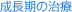

指定自立支援医療機関（育成医療・更生医療） 顎口腔機能診断医療機関


症例1) 叢生：切端咬合咬合による歯肉の退縮と、非抜歯で叢生を治療した症例
治療前
初診時8歳の男の子です。上下の前歯が切端でかみ合っています。そのため、下の前歯は揺れて(動揺)、歯肉の退縮(咬合性外傷：ピンク色丸印)が認められます。また、検査の結果、歯が大きく、歯の入れ物(歯槽骨)が小さいため、歯列のガタガタ(叢生)が予想されました。Ⅰ期治療として、リンガルアーチにより、裏側から上の前歯を前方へ移動し、干渉を取り除きます。その後、かむ訓練(MFT：セラバイト)を追加し、歯の入れ物を大きくするようにしていきました。
リンガルアーチによって、前歯の被蓋関係を改善しました。それにより、歯肉の退縮の進行を予防いたしました。
Ｉ期治療終了時
第Ⅰ期治療が順調に終了しました。その結果、第二期治療は歯を抜かないで噛み合わせを作っていく治療に進むことになりました。ただ、そのためには、上の歯列は奥歯を少し奥に移動し、前歯の調整の場所づくりをすることになりました。
治療後
治療終了時です。この様に歯を抜かずに綺麗な噛み合わせを作ることができました。また、下の歯の歯肉退縮も進行を止めることができました。さらに、この患者さんには、下あごに親しらずが左右に存在していましたので、JR札幌病院口腔外科にて歯胚の早期摘出術をしていただき、長期的な安定を確保しました。とても綺麗な口元になりました！
症例2) 叢生・上顎前突：非抜歯にて噛み合わせと前歯の角度を整えた症例
治療前
11歳の男の子です。出っ歯（上顎前突）で、歯のガタガタ（叢生）を伴っています。第一大臼歯（6歳臼歯）の上下の基準（上の第一大臼歯は下の第一大臼歯より半分後ろにあること）を作るために、まず、ヘッドギアを家の中だけで使用していただきます。
この装置はディズニーのファインディング・ニモという映画の中で、”ダーラ”ちゃんとうニモをいじめる女の子が使っていましたね。アメリカでは一般的な装置です。ヘッドギアは、家の中だけで使用していただきました。
Ｉ期治療終了時
上下の第一大臼歯の噛み合わせの基準が黄色丸印のように完成しました。このことにより、歯を抜かないで上下の噛み合わせを作ること、および前歯角度ののコントロールをすることが可能になりました。上下に審美マルチブラケットを装着して、歯並びの矯正治療が開始しました。
審美ブラケットと、ホワイトコーティングしたワイヤーを使用すると、この様に目立たない組み合わせになります。
治療後
ヘッドギアをよく使ってくれたので、上下の歯を抜かないで、噛み合わせと前歯の角度を改善することができました。下の写真で見ても、前歯の角度をこれだけ整えると、口もとがこの様に良くなるのですよ！
歯が理想的な当たり方をしています。食べ物を噛み切ってよく咬む事が出来るようになりました。口が閉じやすくなったので、筋肉に力が入っていません。鼻先、上唇、下唇、オトガイがE-Line上にあり、審美的にも改善されています。口が閉じられるようになったので、唾液による自浄作用も回復し、歯肉炎も改善し、食べ物がよりおいしく感じられます。
症例3) 叢生：咬合性外傷の改善と、先天性欠如を解決した症例
治療前
初診時8歳の女の子です。上下歯列とも、将来的に永久歯が生えそろう場所（スペース）がなく、歯のガタガタ（叢生）が予想されます。レントゲン画像で見ると、左下の第二小臼歯が認められません（先天性欠如）でした。また、前歯の噛み合わせが悪く、右下1番（右下中切歯）が外にはじかれ、根が露出傾向（咬合性外傷）にあります。その歯を救うため、上下の歯にリンガルアーチという装置を入れて、歯を保護しました。また、その後、筋機能訓練（MFT：噛む訓練）で、歯列の成長を促しました。
Ｉ期治療終了時
第Ⅰ期治療がほぼ終了し、第ＩＩ期治療においてマルチブラケットを装着して噛み合わせを作ることとなりました。左右の小臼歯・大臼歯の噛み合わせを確立し、上の前歯の中央に右下の中切歯の真ん中が合うようにすると、上下前歯のアーチが揃うということが分析結果で明らかになりました。そのため、右下第二小臼歯は萌出場所をつくって萌出させ、左下第二小臼歯の欠如の部分は後ろの大臼歯を前に移動させることで隙間を埋めていくことを計画しました。
まず、上の歯に審美ブラケットつけて、慣れていただきます
その後、下の歯にもブラケットをつけていきます。ブラケットにワイヤーを止めるゴムはいろいろな色があり、来院ごとに交換しますので、カラフルに楽しむこともできます。この色はパステルピンクです。
治療後
計画通り、歯の移動が行われました（上下前歯の正中は計画的に合わせていません：合わせてしまうと、奥歯の噛み合わせが崩れてしまうため）。現在、長期安定を目指して保定（歯がため）中です。
症例4) 叢生
治療前
糸切り歯が歯の並びからはみ出しています。歯を支える骨（歯槽骨）と歯の大きさがあっていないために起こります。歯磨きがしにくく、虫歯や歯周病（歯槽膿漏）になりやすく、また良く咬めない為、全身の健康にも影響します。
この患者さんの場合は小臼歯を4本抜き、その隙間を利用して、歯並びを治しました。歯を抜かないで治療できる場合もあります。いずれにしても良く咬む事ができ、歯磨きもしやすく、発音が正しくでき、口元もきれいになり、何十年も安定できるような治療を目指します。歯の裏側についている針金は歯が安定したら取り除きます。
旧HPに掲載されていた症例